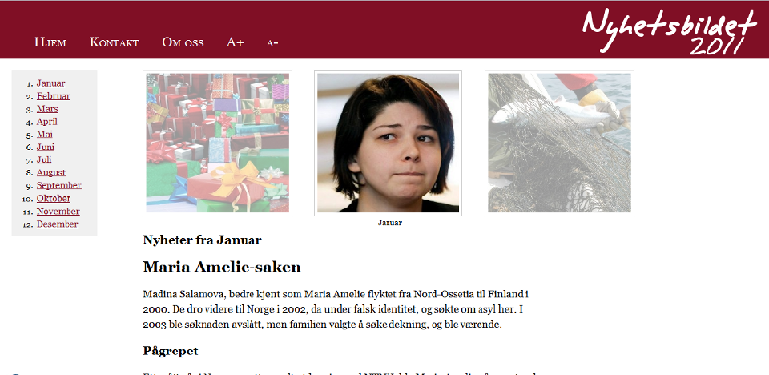

Sluttrapport
Velkommen til gruppe 48 sin sluttrapport. Her finner du en sluttrapport som tar for seg vårt web-prosjekt som har vart i ca. 3 måneder.
Sluttproduktet finner du ved å klikke her.

Resyme
Dette dokumentet omhandler prosjektet vårt “Nyhetsbildet 2011” i faget web-prosjekt ved Høgskolen i Oslo og Akershus.
I dokumentet vil du finne en oversikt over startfasen, metodene og teknologien vi har brukt, problemene som har oppstått og hvordan vi løste de, resultater og til slutt en hovedkonklusjon og avslutning.
Innholdsfortegnelse
Del 1 - Startfasen
1.1 Introduksjon
Dette er sluttrapporten for gruppe 48 sitt prosjektarbeid høsten 2011. Prosjektet er en del av faget Web-Prosjekt ved Høgskolen i Oslo og Akershus. Gruppen består av Kristoffer, Shari, Marit. Kristoffer og Shari går på dataingeniør-linja, Marit går på Anvendt Datateknologi. Når gruppen ble dannet kjente ingen hverandre men i løpet av prosjektet har vi blitt bedre kjent.
Som alle prosjekter har ikke oppgaven gått plettfritt pga sykdom og manglende tilstedeværelse fra enkelte gruppemedlemmer. Dette har ført til en del problemer og veldig skjev arbeidsfordeling da to av gruppemedlemmene endte med å gjøre det meste av arbeidet.
1.2 Opprettelsen av konseptet og problemstilling
Vi hadde ingen geniale ideer til prosjektet men bestemte oss for å lage en problemstilling som passet til våre prosessmål. Vi ønsket å lære mest mulig om web-utvikling og prosjektarbeid i løpet av prosjektet og endte dermed med å skape en problemstilling ut i fra et fiktivt problem.
Vi bestemte oss for å lage en nettside som på en enkel og informativ måte presenterte de viktigst hendelsene i Norge fra året 2011.
Problemstillingen lar oss nå våre prosessmål om å lære web-utvikling samtidig som vi får muligheten til å produsere en flott produktside som vil være til nytte for besøkende som ikke har fått med seg enkelte nyheter i løpet av året.
Problemstillinge blir da “Hvordan kan vi teknisk godt fremstille en oversiktlig nyhetsside for 2011?”
1.3 Ideer til gjennomførelse
Det finnes flere alternativer til hvordan vi kan gjennomføre prosjektet på en måte som løser problemstillingen.
Vi ønsket helst en ganske fancy CSS3/Javascript-basert slider-løsning der du har 3-5 bilder på rad som roterer i en slags karusell. Dette ville krevd at alle besøkende hadde javascript så vi ønsket også å kunne falle tilbake på en versjon uten javascript så besøkende som bruker nettlesere/klienter tilpasset blinde.
Et annet alternativ var en helt statisk side laget i kun HTML og CSS der vi hadde endt med å klippe og lime mye av designet per underside. Denne løsningen hadde fungert men vi valgte å benytte oss av muligheten til å bruke server-side scripting så innholdet kan styres dynamisk.
Siden Kristoffer drev med programmeringen av nettsiden og bruker scriptspråket Ruby daglig så var det et lett valg. Nettsiden benytter seg av Ruby støttet av rammeverket Sinatra.
1.4 Utkast til design
 Navigasjon skal foregå enkelt med en “knapp” for hver måned og i utgangspunktet ønsket vi også en navigasjonsslider med 12 “hakk” der du enkelt kan navigere deg frem til en spesifikk må. Bildene “forrige måned” og “neste måned” skal også fungere som forrige- og nesteknapp via en css:hover event som gjør at du får en pil over bildet som indikerer at du kan navigere videre derifra til ønsket måned i tillegg til å ha nedsatt opacity for å gjøre det tydelig hvilken måned man ser på.
Navigasjon skal foregå enkelt med en “knapp” for hver måned og i utgangspunktet ønsket vi også en navigasjonsslider med 12 “hakk” der du enkelt kan navigere deg frem til en spesifikk må. Bildene “forrige måned” og “neste måned” skal også fungere som forrige- og nesteknapp via en css:hover event som gjør at du får en pil over bildet som indikerer at du kan navigere videre derifra til ønsket måned i tillegg til å ha nedsatt opacity for å gjøre det tydelig hvilken måned man ser på.
1.5 Gruppedynamikk og samarbeid
Gruppens dynamikk er bra, vi får ting gjort, men siden kommunikasjonen til tider har vært fraværende, har det vært vanskelig å få fordelt oppgavene godt. Vi har tidligere slitt med siste-liten-arbeid og dette har ført til at noen kanskje har gjort mer enn andre, og at resultatet ikke har vært godt nok i evalueringsprosessen. Det har noen ganger vært vanskelig å organisere gruppemøter, og dette har ført til at noen har stilt opp mer. Men når vi først møtes er vi ellers enige om hva som må gjøres, og dette er heldigvis grunnen til at vi klarer å bli ferdige. Vi hadde også gruppemøter. Her planla vi alle styringsdokumenter, slik at det skulle være lettere å dele ut oppgaver. Dokumentene var noe av det første som ble planlagt i hele prosessen, men samtidig har vi også “gått tilbake” for å gjøre litt om på de, samtidig som vi oppgraderte de litt.
Til leveranse 2 skrev vi en midtveisrapport som skulle inneholde evaluering av prosjektet og en individuell rapport. De individuelle rapportene tok for seg de forskjellige gruppemedlemmenes innsats og hvordan de mente prosjektet gikk.
På slutten av prosjektet gikk ting dårlig. Det endte det opp med at bare to av gruppemedlemmene gjorde nesten alt av arbeidet. Det var like før gruppa falt sammen, og dette et par dager før innleveringsfrist til leveranse 3. Sykdommer og jobb ble også et veldig stort problem som hindret de fleste av oss å jobbe og komme på gruppemøter. De to gruppemedlemmene snakket med veileder angående en løsning og eventuelt muligheten for å ta en individuell muntlig eksamen.
En advarsel ble sendt til de som ikke har deltatt så mye der de fikk beskjed om å svare på epost raskest mulig å møte dagen etter hvis de ønsket å være med på innleveringen.
Det fungerte til en viss grad da i hvert fall det ene av to gruppemedlemmer deltok mer de siste dagene.
Del 2 - Metoder
2.1 Informasjonshenting
For at konseptet vårt skal fungere trenger vi tolv artikler om de største og viktigste hendelsene i Norge for året som har vært.
I løpet av prosjektet har vi også hatt behovet for å lære oss mange nye ting og har måttet hente inn informasjon for dette. Vi har jobbet mest ved å lese artikler og guider på internett samt ved å studere fagets forelesning presentasjoner nøye så vi er sikre på at nettsiden og prosjektet blir som forventet.
2.2 Metoder og verktøy tatt i bruk
2.2.1 Metoder
Mesteparten av prosjektets programmering og utvikling har foregått på en prototypingsbasert måte der vi har prøvd ut ulike ting for å se om det fungerer for vårt konsept.
Det har vært mye prøving og feiling som det ofte er i utvikling når man ikke er kjent med teknologien man jobber med.
Selv om enkelte av gruppemedlemmene har erfaring med web-utvikling fra tidligere har det vært behov for å lære en del nye teknologier.
Tidsmessig har det tatt lenger tid enn ønsket å fullføre prosjektet men det har mye sammenheng med at det er to som har gjort mesteparten av kodingen, design og dokumentasjon.
Da har det ofte blitt trangt med tid når man må skrive dokumentasjon og utvikle siden samtidig og allikevel bli ferdig innen fristen.
2.2.2 Verktøy
Git og GitHub
http://git-scm.org og http://github.com er flittig brukt. Git er et versjonskontrollsystem.
Dropbox
Dropbox har blitt brukt til lagring av alt av prosjektfiler. Vi har en delt mappe der alle prosjektfilene ligger. Sånn sett er kildekoden til nettsiden også sikret dobbelt da det både ligger i Dropbox og på GitHub sine servere. Bruk av dropbox har vært praktisk i forhold til tilgang. Her har alle gruppemedlemmene hatt oversikt, og mulighet til å gjøre endringer.
Google Docs
Google Docs har blitt brukt til flere av dokumentene fordi det gjør det så enkelt å skrive dokumenter sammen samtidig som man er sikret med backup og revisjonskontroll + automatisk lagring hver gang man gjør endringer. Google Docs har også vært flittig brukt av alle på gruppa. Det har vært enklere å skrive styringsdokumenter ved å legge disse her.
Balsamiq Mockupse
Balsamiq Mockup ble brukt til å lage en mockup av hvordan vi ville at siden skulle se ut før vi begynte med design. Dette ble laget av Kristoffer som et forslag, og alle syntes han hadde fått til et godt design ved bruk av dette.
2.3 Risiko og håndtering
I den første leveransen skrev vi en risikoplan som dekket de risikoene vi så som mest sannsynlige. Etter leveranse 2 opplevde vi at flere av disse risikoene ble virkelige da vi slet med sykdom og fravær på gruppa. Ettersom vi er 4 personer på gruppa er det en større risiko enn vi forventet for at noe skal gå galt. Spesielt med tanke på sykdom da sånt sprer seg fort når man jobber såpass tett som man gjør på grupperom.
Vi har både hatt både sykdom, skader og til tider har nok alle følt seg umotiverte og stressa.
En av risikoene vi tenkte på var fravær og lite deltagelse, noe vi opplevde egentlig igjennom hele prosjektet men spesielt etter leveranse 2 fram mot siste leveranse.
Vi tok kontakt med veileder (Siri) da arbeidsfordelingen var så skjev at to av gruppemedlemmene gjorde 95% av arbeidet og ble enige om at vi skulle sende ut en e-post til de som ikke jobbet der vi sa at de måtte svare på e-posten og møte neste dag hvis de ønsket å være med videre.
Dette har bedret situasjonen litt og vi bør klare å fullføre prosjektet i tide men det er fortsatt en som ikke har bidratt stort.
Dagen før leveranse 3 endte vi til slutt med å fjerne det siste gruppemedlemmet som ikke deltok.
2.4 Arbeidsprosess
2.4.1 Design
Produktsiden skal stort sett bestå av bilder og artikler, og derfor er designet veldig viktig. Designet setter artiklene i fokus. Den er informativ, oversiktlig og konkret. Tanken er at man lett skal forstå hvordan man navigerer siden, og sidens innhold skal være lett å lese. Derfor valgte vi å la siden bestå av en enkel forside hvor vi har alt av innhold. I tillegg til det har vi med en underside for "Om oss" og "Kontakt".
Vi begynte med å lage et stort rammeverk som vi plasserte i midten av siden. Her skulle navigasjonsbaren, innholdet og footeren plasseres. For å få det til å se stilig ut valgte vi å gi rammeverket runde kanter. Vi ville gjøre siden så enkel som mulig, og alt av innhold skulle man fort legge merke til uten at man måtte scrolle/klikke så mye. Etter hvert la vi merke til at dette var en dårlig løsning, det mest pga. at innholdet ville ta mye plass som ville føre til en del scrolling.
For å løse problemet med scrolling lagde vi en enkelt container div som inneholder header, innhold, footer og en sidebar for knapper til de diverse månedene. Ganske lignende det første utkastet, bortsett fra at innholdet, header og footer fikk eget container-boks men fortsatt plassert i samme rammeverket som vi utvidet samtidig som de runde border-radius kantene forsvant. Da ble nettsiden luftigere og det ble lettere å fokusere på innholdet. Dette så mye bedre ut, men vi følte at noe manglet.
Etter noen tips fra en villig designstudent ble designets tykke borders fjernet og fargen på footeren droppet. Dette ga designet en renere følelse som igjen gjør at den besøkende kan holde fokus på artiklenes innhold.
Til slutt kom vi frem til en endelig løsning: Rammeverket består av en header, en enkel navigasjonsbar, en sidebar, innhold og en footer. Headeren har en dyp rød farge som gir siden et slags julepreg. Innholdsboksen har hvit bakgrunn og skriftstørrelsen er økt for å sikre at alle kan lese artiklene. Linjeavstanden er også økt for å gi teksten litt mellomrom, noe som øker lesbarheten. Vi valgte å plassere navigasjons-baren i venstre del av headeren for at den fort skal bli lagt merke til, samtidig som vi følger det såkalte F-mønsteret. Det sies at de fleste som besøker et nettsted alltid ser på øverste hjørnet i venstre, og følger deretter etter et slags F-mønster. Å plassere innholdet under menyen vil sørge for at innholdet fort blir lagt merke til. En selvlaget logo er plassert på høyre side av headeren.
2.4.2 Programmering
Programmeringen foregår metodisk ved bruk av kildekontrollsystemet git (og spesielt da http://github.com). Kildekoden lagres både lokalt og på server, og endringer spores ved hjelp av git commits, som så pushes til serveren. Siden bygges opp med tanke på at konseptet skal fungere med kun HTML. CSS brukes til styling men siden skal kunne navigeres uten styling.
Javascript benyttes til diverse småting ved hjelp av jQuery.
Vi ønsker å følge oppgavens krav om at alle sidene skal validere men har også valgt å benytte oss av enkelte CSS3 features som ikke har blitt akseptert i standarden enda. Dette gjorde vi bevisst fordi adaptasjonen av disse featurene er så vidtspredt at vi føler de straks vil bli en del av standarden. Google Chrome, Mozilla Firefox, Safari, Opera og til og med Internet Explorer støtter (og viser) de featurene vi har valgt å benytte oss av på samme måte, selv om de ikke validerer i CSS validatoren.
For å gjøre evalueringen av prosjektet enklere har vi plassert all CSS som ikke validerer i samme stilark. Dette gjør at man enkelt kan se at vi også klarer å produsere CSS stilark som validerer fint når man ser på det andre stilarket.
Vi har også benyttet oss av et stilark kalt Normalize.css definerer CSS standard som gjør at alle HTML objekter vi vises mest mulig likt i alle browsere. Dette er veldig greit fordi da kan vi sikre at nettsiden vår ser mest mulig identisk ut i alle nettlesere. Nettsiden fungerer også på mobil, til en viss grad. Innholdet og artiklene er lesbart men på grunn av navigasjons-sliderens bredde blir slide-div’ene blir stående oppå hverandre istedenfor ved siden av hverandre.
Programmeringen har i hovedsak blitt utført av Kristoffer med god hjelp fra Shari på design delen.
2.4.3 Detaljarbeid
Vi brukte en stund på fikse småfeil og bestemme oss for en fargepalett. Vi endte til slutt på en dyp mørk rødfarge som minner om julen. Noe som passer bra med prosjektleveransen.
Vi klarte også, etter mye knot å få designet til å se såpass likt ut i alle nettlesere at vi kunne godta det. Det gjenstår noen småting på mobiltilgang men mobiltilgjengelighet er ikke en del av dette prosjektet så vi jobber ikke noe mer med å få til dette nå.
2.4.4 Dokumentasjon
Vi jobbet jevnt hele prosjektet med å dokumentere arbeidet. Det ble en del endringer etterhvert som vi fikk de nye leveransene og tilbakemelding på innleverte leveranser.
Første leveranse fikk vi såvidt ikke godkjent og vi endte med å måtte oppdatere og utdype enkelte deler av gruppesiden.
Sluttrapporten ble skrevet over flere dager. Vi lagde først en ønsket innholdsfortegnelse med punkter vi mente vi måtte ha med. Deretter begynte vi å skrive inn selve innholdet i siden.
Kvelden før siste leveranse ble Google Docs dokumentet formatert for nett.
Del 3 - Resultater
3.1 Produktsiden (funksjonaliteter o.l)
Nettsiden omhandler de viktigste innenriksnyhetene som har skjedd i 2011. Vi har valgt å velge ut en nyhetsartikkel pr. måned og på den oppsummere “The news of the month”. Produktsiden består av en enkel forside, der nyheter presenteres for hver av måneden.
Januar vil lastes som default, med mindre vi fortsatt er i 2011. Da vil måneden vi er i lastes opp.
På toppen av siden har vi plassert en navigasjonsbar i headeren, og dette har vi gjort slik at navbaren blir lagt merke til. En selvlaget logo er plassert på høyreside av headeren.
Innholdet består av en slide med tre bilder, og en artikkel plassert under bildene. Vi valgte å plassere tre bilder i en slide for at man lett skal kunne navigere seg fram til de forskjellige månedene ved å trykke på nyhetsbildene. Når vi holder musa over kantbildene dukker det opp en pil som sier om du vil gå til neste måned.
Vi i Nyhetsbildet-teamet fokuserer mye på brukervennlighet. Derfor har vi også plassert en navigasjonsbar på venstreside av innholdet, hvor vi har en liste med de forskjellige månedene. Hvis man ikke ønsker å trykke på bildet for å navigere, skal man lett kunne navigere seg fram ved å trykke på ønsket måned.
Den gjenværende gruppen har samarbeidet godt nå siste dag før leveransen selv om de siste ukene har vært preget av sykdom og fravær. Vi hadde mye arbeid framfor oss så vi fokuserte først på å få ferdig all dokumentasjon og funksjonalitet på siden.
I tillegg til alt dette har vi lagt inn et “Kontakt oss” funksjon vha. Ruby. På den måten kan brukerne sende oss en tilbakemelding om nettsiden per e-post.
3.2 Tilrettelegging (utsatte brukergrupper)
Som nevnt har vi laget et brukervennlig design der intensjonen er at designet skal fungere best mulig i alle nettlesere og for alle besøkende.
Vi ønsker at siden skal være tilgjengelig for alle, også de som er svaksynte. Vi har derfor lagt inn muligheten for å øke eller senke skriftstørrelsen som vil hjelpe svaksynte besøkende.
Vi jobbet en stund med et kontrast-stilark spesifikt for svaksynte besøkende som skulle gjøre det lettere å lese teksten på siden. Etter en stund ble det konkludert at svaksynte besøkende antageligvis allerede hadde invertert kontrast i operativsystemet. Dermed ble behovet for et eget stilark for svaksynte borte. Vi testet hvordan siden så ut når man hadde inverterte farger i operativsystemet og resultatet var bra. Artiklene og sidens innhold var enklere å lese selv om vi ikke hadde et eget stilark.
Nettsiden skal følge WCAG 2.0 AA (AAA) i følge flere validatorer vi prøvde på internett.
Vi har passet spesielt på at alle bilder, forms og annet har alternative tekster og labels.
Nettsiden er blitt testet i de fleste browsere som blir brukt nå til dags, Internet Explorer, Mozilla Firefox, Google Chrome, Opera og Safari.
Vi har smått testet siden på mobile enheter, foreløpig bare på telefoner med Android.
3.3 Sammendrag
Nettsiden gir et oversiktlig bilde over nyhetene for 2011. Artiklene er lett leste og formatert for at de enklest mulig skal kunne leses. Det er mulig å øke og senke skriftstørrelsen på artikler og nettsiden vises på samme måte i de mest brukte nettleserne så sant man har en nyere versjon.
3.4 Kildeliste
- Doc Center, https://developer.mozilla.org/en-US/docs
- CSS Reference, https://developer.mozilla.org/en/CSS/CSS_Reference
- W3School, http://w3schools.com
- W3Fools, http://w3fools.com
- HTML5 og CSS3 Validator, http://www.w3.org/
- WCAG 2.0, http://www.w3.org/TR/WCAG/
- Forelesninger i kurset Web-Prosjekt. (2011). Siri Fagernes og Alfred Bratterud, Høgskolen i Oslo og Akershus
Del 4 - Oppsummering
4.1 Hvilke mål ble oppnådd?
Vårt mål var å få utviklet en funksjonell side som skulle tilfredsstille visse krav. Mye av kravene har vi klart å oppfylle, men ikke alle. Produktet ble tilstrekkelig fullført til at besøkende enkelt kan få en rask oversikt over de viktigste hendelsene for året 2011. Enkelte av gruppemedlemmene har lært en del mer HTML og CSS og fått en god lærepenge når det gjelder prosjektarbeid.
4.2 Hvilke mål ble ikke oppnådd?
Nettsiden ble ikke så “fancy” som ønsket pga. mangel på tid grunnet gruppens samarbeidsproblemer.
I utgangspunket ønsket vi at alle på gruppen skulle lære web-utvikling og prosjektstyring og ved slutten av prosjektet skulle ha få problemer med å jobbe med fremtidige prosjektet og enkelt klare å lage egne nettsider. Dette skjedde ikke da to stykker ble sittende med hele utviklingen a nettsiden.
4.3 Styrker og svakheter
Styrker:
Gruppen kan jobbe effektivt når vi samarbeider.
Siden består hovedsaklig av ren HTML og CSS og vil dermed kunne besøkes av folk som bruker lynx eller nettlesere for blinde eller svaksynte. Funker i de fleste nyere browsere.
Siden siden består av stort sett ren HTML/CSS kan den motså en stor mengde besøkende uten problemer. I våre tester klarer den over 900/requests per sekund noe som betyr at på en enkelt server ville siden tåle ca. 77 millioner besøkende per dag. Det er ganske kult!
Svakheter:
Gruppearbeid er avhengig av at alle dukker opp.
Ble ikke så fancy som ønsket mtp. manglende tid og arbeidsfordeling. ¾ jobber deltid, noe som har begrenset gruppemøter. Funker dårlig på mobil.
Benytter seg av enkelte ting som ikke er del av CSS3 standard enda.
4.4 Utviklingsmuligheter for siden
Selvom nettsiden så og si er ferdig, finnes det flere utviklingsmuligheter for siden. En av våre fremtidige ønsker er å få implementert en bedre slider med fine animasjoner. Mangel på kunnskaper og dårlig tid hindret oss i å fokusere på denne løsningen tidligere.
I tillegg til dette har vi planer om å opprette en mobilversjon av nettsiden. Vi ønsker at leserne skal få tilgang til nettsiden fra mobilen uten at det oppstår store problemer.
Støtte for flere år er en stor mulighet for siden. Leserne skal da kunne sjekke tidligere nyheter som har vært viktige for landet vårt.
I starten av dette prosjektet tenkte vi på om vi skulle plukke ut de viktigste nyhetene verden rundt, eller Norge. Vi endte opp med å velge Norge, men vi har planer om å utvikle nettsiden slik at man kan velge mellom kategoriene innenriks, utenriks eller sport.
4.5 Faglige vurderinger
Under prosjektet har vi lært mye om det å jobbe i gruppe. Dette på godt og vondt.Vi har lært hverandre å kjenne, og forsøkt å samarbeide så godt vi kan. Vi er fire forskjellige individer som må ta hensyn til hverandre. Alle har en rett til å bli hørt, og sammen skal vi jobb mot et felles mål. Vi har hele tiden vært samlet om hva vi skal oppnå, og selvom vi har møtt på problemer underveis, så har vi faktisk klart å nå målet vårt.
I løpet av den obligatoriske innleveringen har vi lært å lage nettsider ved hjelp av HTML og CSS.
Selvom ikke alle har deltatt i like stor grad på det tekniske i prosjektet, så har alle lært seg HTML og CSS da de laget de individuelle sidene. Alle har vært med og skrevet styringsdokumenter, og derfor tatt del i det å dokumentere arbeidet underveis. I dette faget er styringsdokumentasjon vel så viktig som det å sitte og kode.
4.6 Hovedkonklusjon
Gruppa kom godt i gang. Vi fant fort frem til en problemstilling, og planleggingen av hvordan vi ønsket å komme frem til løsningen. Kristoffer hadde en ide om at vi skulle lage en nettside der man navigerte seg fra side til side ved å trykke på et bilde som skled frem og tilbake ved å dra på musepilen. Egentlig kunne vi ha laget en nettside om nesten hva som helst, og vi bestemte oss for at en nyhetsside ville vise ideen vår på en grei måte.
Pbl 1 gikk ut på å lage en gruppeside, og diverse styringsdokumenter. Vi lagde planer om hvordan vi skulle gå frem, ansvarskart og gruppeavtale. Denne leveransen var ikke så stor som de andre, og vi slappet kanskje litt for mye av. Oppgavefordelingen var kanskje litt ugjevn, men her gjorde de fleste av oss cirka like mye. Dette kan man kanskje si var en årsak til at vi havnet litt skjevt ut. Leveransen ble med det første ikke godkjent, og vi ble nødt til å rette opp en del allerede uken etter leveransen.
Da vi fikk pbl 2 fikk vi mye mer å gjøre. Her hadde vi enda flere styringsdokumenter å skrive, og vi måtte ha en skisse for nettsiden vi skulle lage. Denne ble også påbegynt, og man så etter hvert at tekniske problemer skulle bli en utfordring. Egenevaluering var også en del av innleveringen, og her kom det kom det frem at flere slet litt med motivasjonen. Arbeidsfordelingen var enda mer skjev, og noen stilte opp på møter og gjorde mer enn andre.
Mot pbl 3 har noen på gruppen tatt tak i problemene som har oppstått, og truet med at de som gjør minst kanskje bør skjerpe seg, hvis ikke vil det få konsekvenser som at ikke alle blir inkludert i innleveringen. Dette har ført til noen forbedringer, og de fleste har stilt opp på de siste møtene for å jobbe hardt for å få en god sisteinnlevering. Siden noen fortsatt jobber mer enn andre, har individuell evaluering vært et samtaleemne.
Gruppa har som nevnt tidligere hatt en god kjemi, og vi har vært enige når vi har møttes. Det å få til møter har heller til tider vært vanskelig. Det fleste av oss jobber, og vi har også hatt sykdom og skader. Allikevel har de fleste av oss klart å gjøre en del på egenhånd. Noen har mulighet til å gjøre skolearbeid på jobben, og selv om man er hjemme, og ikke er helt i form, så har man klart å bidra. Kommunikasjonen har hovedsakelig gått via en opprettet gruppeside på facebook, et sosialt media alle bruker daglig.
Faglig har vi fordelt oppgavene slik at noen har jobbet med programmeringen, mens andre har konsentrert seg mest om styringsdokumentene. Det er ofte sånn i en gruppe at man har forskjellige interesser. Noen liker best å jobbe med utvikling, mens andre foretrekker å skrive. Selv om oppgavefordelingen til tider har vært noe ujevn, har allikevel alle funnet sitt felt å konsentrere seg om, og gjort det de sier de skal gjøre. En gruppeleder har ansvar over å ha oversikt over det som skal gjøres, men de resterende gruppemedlemmene har også ansvar over å sette seg inn i hva man skal gjøre, og har de ikke noe å gjøre, må de eventuelt høre med gruppelederen, eller starte på noe ugjort, og i tillegg si i fra at man tar den bestemte oppgaven.
De som har tatt seg av programmeringen har brukt HTML og CSS for å lage gruppesiden. Den er veldig enkel og grei, men den har etter hvert blitt mer utfylt av de forskjellige styringsdokumentene. Her ligger også lenker til alles hjemmesider vi ble bedt om å lage før vi fikk utdelt gruppene.
Prosjektsiden er laget med HTML, CSS og Javascript. Siden har fått et stilrent utseende som alle liker. Selv om ideen var at den skulle bli mer ”fancy”, har vi kommet til en løsning som fungerer på samme måte. Galleriet skulle i utgangspunktet gli fra side til side av seg selv, men siden dette ble en for stor utfordring å få til, er galleriet nå bestående av tre bilder, der det midterste bildet representerer hvilken måned man er i, mens de to andre bildene på siden er duset ned, og viser en pil til henholdsvis høyre og venstre for at man lett kan komme seg til tidligere eller senere måneder.
På venstre side finner vi en meny som består av tolv punkter. Ved å trykke på disse kan man velge den aktuelle måneden du ønsker å besøke fra januar til desember. På øverste linje finner man en meny som består av hjem, kontakt, om oss, og A+ og A-. Ved å trykke på A+ og A- vil en leser bestemme skriftstørrelsen på nettsiden. Dette har vi gjort for å tilpasse siden for svaksynte. Til høyre på øverste linje finner vi logoen til nettsiden ”nyhetsbildet 2011”.
Ved å trykke på en bestemt måned kommer det artikler og linker fra tiden du er inne på. Her har vi valgt å fokusere på kun de aller viktigste hendelsene i Norge. Ved en utvidelse av siden kunne vi ha hatt flere nyheter, men har i første omgang valgt å holde det enkelt. Vi er ikke journalister, og har ikke hatt tid til å skrive lange artikler. Men her ser vi et potensial, som også vil kunne ha gjort menyen større. Da kunne man ved siden av nyheter fra Norge valgt utenriks-, sports-, og for eksempel kulturnyheter.
Vi synes nettsiden vår har blitt veldig delikat og oversiktlig slik vi hadde ønsket. Målet vårt om å lage en nettside fra 2011 har blitt fullført, og vi er fornøyd med resultatet. Vi har ikke hatt behov for å endre tema for siden underveis, og vi føler vi har fått vist det vi skulle ved å ende med opp med dette. Vi mener derfor at vi har løst problemstillingen vår som var “Hvordan kan vi teknisk godt fremstille en oversiktlig nyhetsside for 2011?”
4.7 Avslutning/Refleksjonsnotat
Vi har lært å jobbe med prosjekt og alt det innebærer. Vi samarbeider godt når vi først setter i gang og gir jernet. Noen sitter igjen og føler de har bidratt mer enn andre, og det har vært tilfelle på gruppa. Kjemien har vært god mellom alle sammen, men selvfølgelig blir opplevelsen av unnasluntring rot til irritasjon. Alle har vel tatt lærdom av at god kommunikasjon er viktig, og gjør at man på god vei kan samarbeide, og føle at ting blir rettferdig, så lenge alle holder gruppeavtalen og gjør det de sier de skal til riktig tid.
Vi har møtt på tekniske utfordringer; nettsiden ble ikke helt hva vi hadde sett for oss. Men vi kom frem til en ny, god løsning. Selv om den ikke var like “fancy” som designet vi utgangspunktet hadde sett oss ut, er den like oversiktlig og funksjonell. Vi har kommet frem til en enkelt navigerbar side vi alle kan stå inne for. Innholdet ville vært det samme uavhengig av løsning.